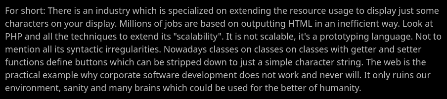
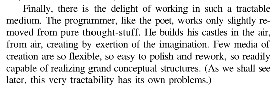
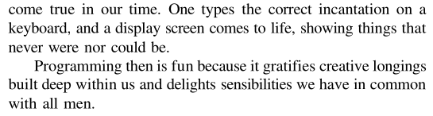
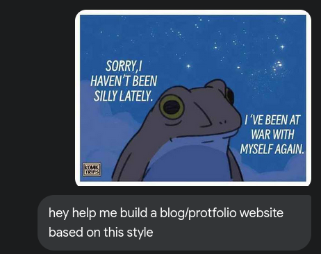

The Journey of building This
Motivation
The initial idea for a personal website came to me last summer. A lot of people told me that "100 skill x 0 visibility = 0." At this time, I hated LinkedIn and hated being part of this fake community; I felt like no one was real there. It was a sick place to be.
I started to look at how people build their websites. I had just finished learning about game programming and wanted to use those skills with something like WASM or WebGL. Then, I found the amazing dustinbrett and fahru. Seeing their work, which involved a lot of personal detail, I got more excited and started to look into how I could build my own site like theirs.

Initial Start
I was not interested in learning anything about web development then; I just wanted to learn the minimum to get my site working. I started with Vuepress when I saw how easily me2resh.com was made and followed some tutorials for a while before getting bored. There was nothing exciting, just a few templates, and it was hard to add a personal touch and a story. I went to The Odin Project and got what I needed to go my own way. The summer ended, and I got back to university and forgot about it until a friend sent me this and this. Later, I read the suckless website. I found beauty in the simplicity and understood what they were trying to say.

Then, I didn't know exactly what I wanted to build. Ben's website was my goal at the time.
Building Software is Art
One day, while Browse Hacker News, I found this blog. I went to taylor.town and just fell in love. I loved how he expressed himself in his own way; it was like a painting to me that I stared at for hours over several weeks. A few days later, I stumbled upon The Mythical Man-Month.
 
How This Was Built
I didn't know where to start. While scrolling Twitter, I found a comic about a dreamy night with a frog, which I stared at before going to an LLM for more inspiration.

It gave me a place to start. I finished putting my own touch on it and editing what I felt needed to be changed. I searched for a good CMS and found this blog and this post, which led me to this script.
It was a great journey that led me to learn more about myself. Thanks to everyone who tries to build things with passion.